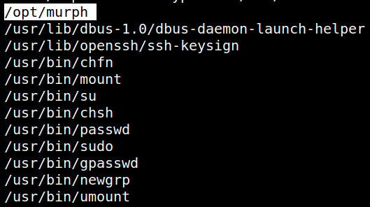
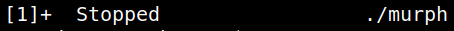

4.2 Look for SUID files
1. Check on the victim machine for any file having SUID permissions with the help of “find” command. By using the following command, we enumerated all binaries having SUID permissions:
$ find / -perm -u=s -type f 2>/dev/null
Output:

There's an interesting file “/opt/murph”.
2. Run “/opt/murph”.
www-data@murph:~/html/uploads$ cd /opt
www-data@murph:/opt$ ./murph
^Z
www-data@murph:/opt$ ./murph
^Z
Output:
The program is waiting the “SIGUSR1” signal.
